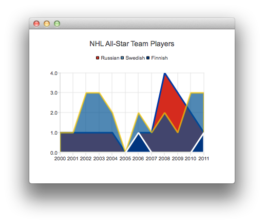

AreaSeries QML Type
Presents data in area charts. More...
| Import Statement: | import QtCharts 2.2 |
| Instantiates: | QAreaSeries |
| Inherits: |
Properties
- borderColor : color
- borderWidth : real
- brushFilename : QString
- color : color
- lowerSeries : LineSeries
- pointLabelsClipping : bool
- pointLabelsColor : font
- pointLabelsFont : font
- pointLabelsFormat : string
- pointLabelsVisible : bool
- upperSeries : LineSeries
Signals
- clicked(point point)
- doubleClicked(point point)
- hovered(point point, bool state)
- pressed(point point)
- released(point point)
Detailed Description
The following QML shows how to create a simple area chart:
ChartView { title: "NHL All-Star Team Players" anchors.fill: parent antialiasing: true ValueAxis { id: valueAxis min: 2000 max: 2011 tickCount: 12 labelFormat: "%.0f" } AreaSeries { name: "Russian" color: "#FFD52B1E" borderColor: "#FF0039A5" borderWidth: 3 axisX: valueAxis upperSeries: LineSeries { XYPoint { x: 2000; y: 1 } XYPoint { x: 2001; y: 1 } XYPoint { x: 2002; y: 1 } XYPoint { x: 2003; y: 1 } XYPoint { x: 2004; y: 1 } XYPoint { x: 2005; y: 0 } XYPoint { x: 2006; y: 1 } XYPoint { x: 2007; y: 1 } XYPoint { x: 2008; y: 4 } XYPoint { x: 2009; y: 3 } XYPoint { x: 2010; y: 2 } XYPoint { x: 2011; y: 1 } } }

Note: Adding the same line series to a chart and area series is not supported. The series used as boundary lines should be defined only for the area series.
Property Documentation
lowerSeries : LineSeries |
The lower one of the two line series used to define area series boundaries.
Note: If AreaSeries was constructed without a lowerSeries, this is null.
Defines the clipping for data point labels. True by default. The labels on the edge of the plot area are cut when clipping is enabled.
See also pointLabelsVisible.
Defines the color used for data point labels. By default, the color is the color of the brush defined for labels in the theme.
See also pointLabelsFormat.
Defines the font used for data point labels.
See also pointLabelsFormat.
The format used for showing labels with series points.
See also QAreaSeries::pointLabelsFormat, pointLabelsVisible, pointLabelsFont, and pointLabelsColor.
Defines the visibility of data point labels.
See also pointLabelsFormat and pointLabelsClipping.
upperSeries : LineSeries |
The upper one of the two line series used to define area series boundaries.
Signal Documentation
This signal is emitted when the user triggers a press on point by clicking it in an area chart.
The corresponding signal handler is onClicked.
See also pressed, released, and doubleClicked.
This signal is emitted when the user hovers the mouse cursor over a series or moves it away from the series. point shows the origin (coordinate) of the hover event. state is true when the cursor hovers over the series and turns false when it moves away from the series.
The corresponding signal handler is onHovered.
This signal is emitted when the user presses the point specified by point in an area chart.
The corresponding signal handler is onPressed.
See also clicked, released, and doubleClicked.
This signal is emitted when the user releases a press that was triggered on point in an area chart.
The corresponding signal handler is onReleased.
See also pressed, clicked, and doubleClicked.